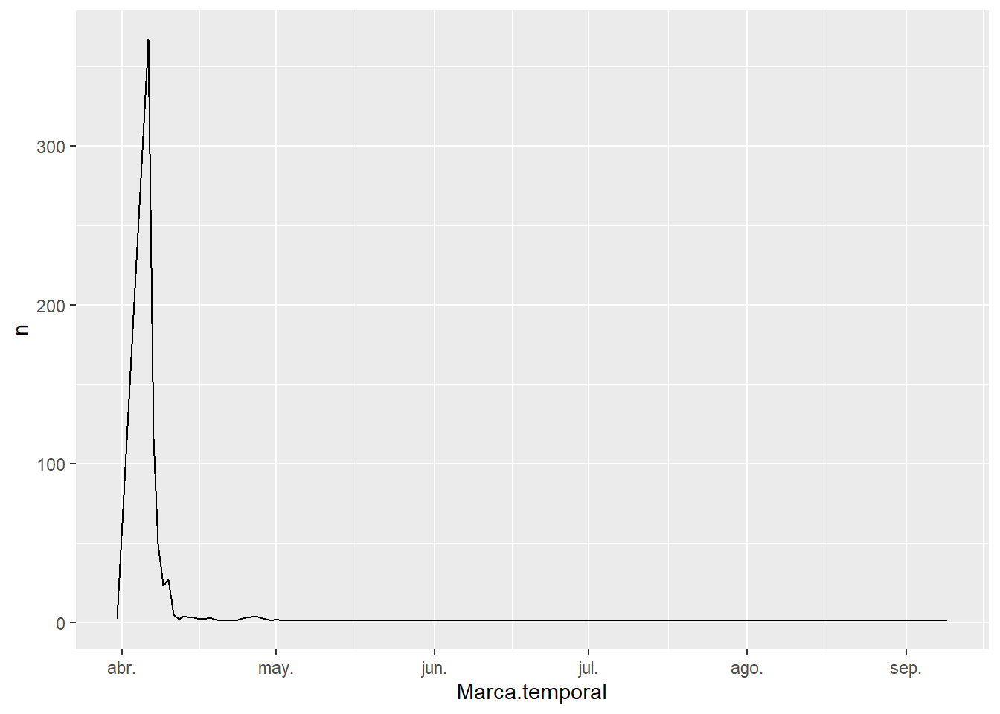
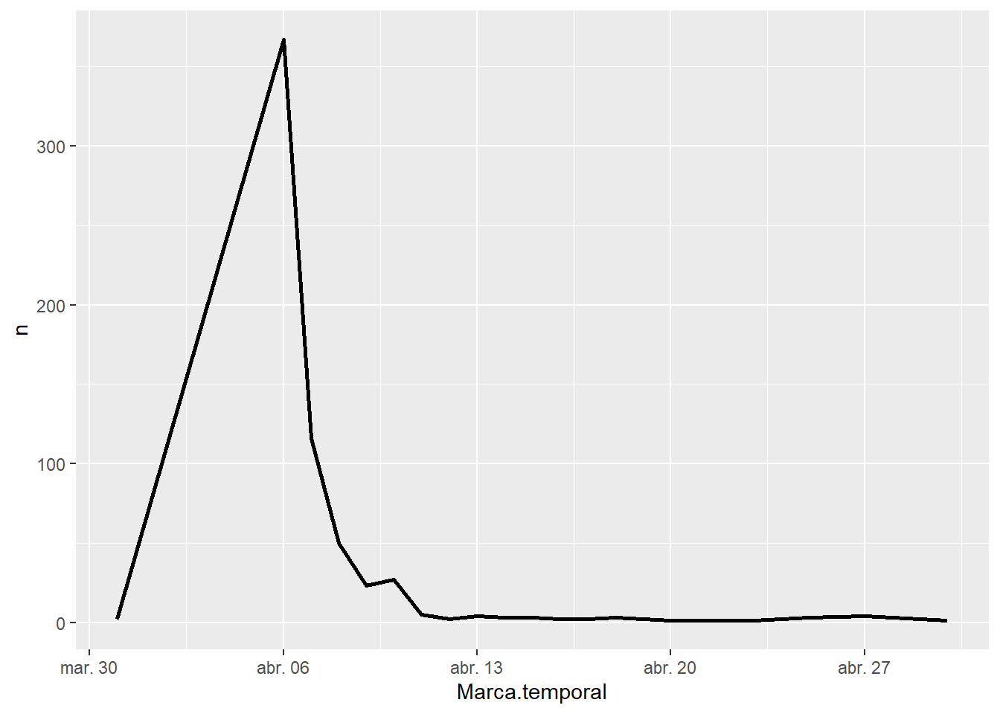
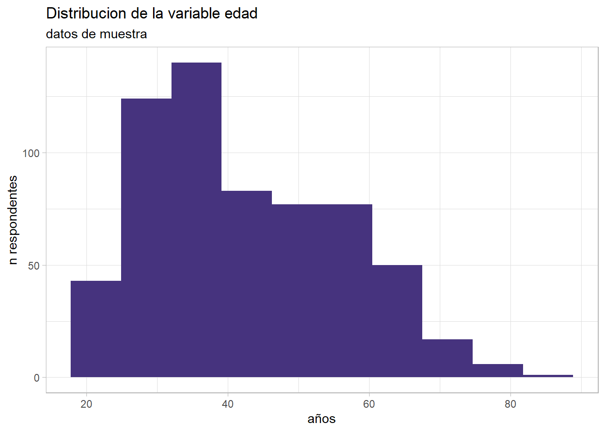
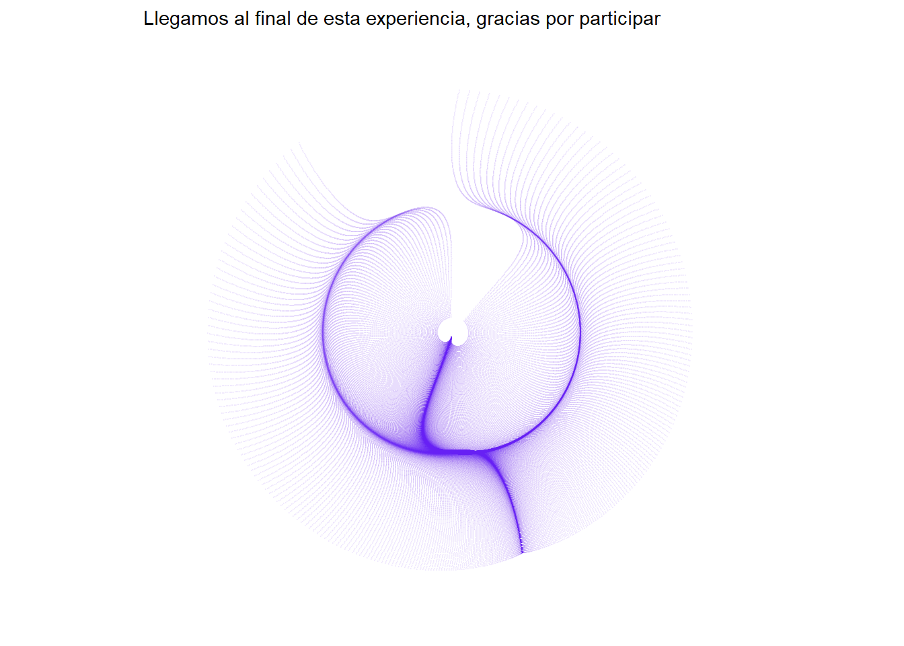

Ver código
library(vembedr)
embed_url("https://www.youtube.com/watch?v=mVqxiFUI6xA&ab_channel=ColegiodeSoci%C3%B3logxsBsAs") %>%
use_align("center")%>%
use_bs_responsive()Pedro Damian Orden
January 9, 2024
El presente documento es un material de taller pensado para profesionales de las ciencias sociales y público interesado. Se procura aquí presentar de manera general una serie de procedimientos asociados al procesamiento de encuestas con R.
Una versión de este documento fue presentada en un Taller abierto del NIS el 16 de septiembre de 2022 y grabada en vivo para que todos y todas puedan replicar la experiencia código a código.
Las diapositivas utilizadas en la primera parte del encuentro pueden encontrarse aquí.
Veremos aquí:
Carga de datos de un formulario drive y transformación.
Análisis preliminar/exploratorio.
Visualización.
Recomendaciones profesionales: visual mode (ahora mismo), skimr, esquisser y janitor.
Los datos de trabajo pertenecen a una sub-muestra de una encuesta realizada por los Colegios Profesionales de Buenos Aires y el NIS a comienzos de la pandemia, los mismos son 100% anónimos y fueron recabados por medio de un formulario Google.
Comenzamos cargando en R las respuestas de drive (previamente debemos compartirlo como público en la web, en formato csv) y creamos el objeto muestra1.
Exploramos con funciones base de R nuestros datos (todavía no estamos usando paquetes).
Indagamos acerca de la clase de nuestros datos:
Consultamos la dimensión del conjunto de datos, filas y columnas:
Y podríamos seguir así, pero no, cargamos el (muy genial) paquete skimr el cual nos ayudará a crear un primer resumen de las características de nuestro set de datos (tengamos presente que para correr un paquete primero hay que instalarlo).
Warning: package 'skimr' was built under R version 4.1.3| Name | muestra1 |
| Number of rows | 627 |
| Number of columns | 24 |
| _______________________ | |
| Column type frequency: | |
| character | 19 |
| numeric | 5 |
| ________________________ | |
| Group variables | None |
Variable type: character
| skim_variable | n_missing | complete_rate | min | max | empty | n_unique | whitespace |
|---|---|---|---|---|---|---|---|
| Marca.temporal | 0 | 1 | 17 | 19 | 0 | 622 | 0 |
| X.Estás.haciendo.cuarentena. | 0 | 1 | 2 | 2 | 0 | 2 | 0 |
| Te.identificas.como. | 0 | 1 | 0 | 6 | 9 | 3 | 0 |
| X.En.qué.provincia.vivís.actualmente. | 0 | 1 | 0 | 31 | 9 | 18 | 0 |
| X.Cuál.es.el.máximo.nivel.educativo.que.completaste. | 0 | 1 | 0 | 36 | 9 | 9 | 0 |
| X.Cuál.es.tu.principal.ocupación. | 0 | 1 | 0 | 156 | 9 | 11 | 0 |
| X.Estas.trabajando.desde.tu.casa.bajo.alguna.modalidad.de.tele.trabajo..home.office.. | 0 | 1 | 0 | 29 | 119 | 4 | 0 |
| X.Tenes.hijos.en.edad.escolar. | 0 | 1 | 0 | 49 | 9 | 5 | 0 |
| X.Estás.viviendo.con.ellos.durante.esta.cuarentena. | 0 | 1 | 0 | 68 | 310 | 4 | 0 |
| De.la.siguiente.lista..Cuáles.son.tus.tres.principales.medios.para.informarte.sobre.los.asuntos.del.país.y.la.circunstancia.del.coronavirus. | 0 | 1 | 0 | 151 | 9 | 246 | 0 |
| X.Te.gustaría.nombrar.algún.otro.medio.que.estés.usando. | 0 | 1 | 0 | 125 | 224 | 119 | 0 |
| X.Cambiaste.la.forma.en.que.te.informas.desde.que.comenzó.la.cuarentena. | 0 | 1 | 0 | 2 | 9 | 3 | 0 |
| X.Cómo.cambió.la.forma.en.que.te.informaste | 0 | 1 | 0 | 626 | 426 | 201 | 0 |
| X.Recibiste.noticias..información.relacionada.al.coronavirus.y.o.la.cuarentena.que.resultaron.ser.falsas. | 0 | 1 | 0 | 5 | 9 | 4 | 0 |
| X.Recordas.a.través.de.qué.medio.recibiste.esa.información.falsa. | 0 | 1 | 0 | 152 | 159 | 103 | 0 |
| X.Crees.que.las.noticias.falsas.o.fake.news.están.influyendo.en.el.comportamiento.de.las.personas. | 0 | 1 | 0 | 5 | 9 | 4 | 0 |
| X.Cómo.crees.que.influyen.las.noticias.falsas.o.fake.news.están.influyendo.en.el.comportamiento.de.las.personas. | 0 | 1 | 0 | 909 | 212 | 400 | 0 |
| X.Cuál.es.la.ocupación.de.la.persona.que.realiza.el.principal.aporte.económico. | 0 | 1 | 0 | 167 | 9 | 11 | 0 |
| Ante.una.emergencia.médica..problema.de.salud..a.dónde.acudis.primero. | 0 | 1 | 0 | 116 | 12 | 20 | 0 |
Variable type: numeric
| skim_variable | n_missing | complete_rate | mean | sd | p0 | p25 | p50 | p75 | p100 | hist |
|---|---|---|---|---|---|---|---|---|---|---|
| X.Cuántos.años.tenés. | 9 | 0.99 | 42.48 | 13.65 | 18 | 32 | 40 | 53 | 82 | ▅▇▅▃▁ |
| X.En.qué.medida.te.sentís.informado.a.acerca.de.las.medidas.de.prevención.del.Coronavirus. | 9 | 0.99 | 4.28 | 0.79 | 1 | 4 | 4 | 5 | 5 | ▁▁▂▆▇ |
| X.Cuál.es.tu.opinión.acerca.de.lo.que.comunican.los.medios.de.comunicación.argentinos.sobre.el.Coronavirus. | 9 | 0.99 | 3.34 | 0.89 | 1 | 3 | 3 | 4 | 5 | ▁▂▇▆▂ |
| X.Cuántas.personas.viven.en.tu.hogar.incluyéndote.a.vos. | 9 | 0.99 | 3.54 | 20.97 | 0 | 2 | 2 | 4 | 522 | ▇▁▁▁▁ |
| X.y.cuántas.realizan.algún.tipo.de.aporte.económico. | 9 | 0.99 | 1.78 | 0.81 | 0 | 1 | 2 | 2 | 5 | ▆▇▂▁▁ |
Un resumen de nuestros datos con dos líneas de código, genial no? Este tipo de paquetes y funciones caracterizan a R, existen muchos desarrollos de la comunidad que pueden ayudarnos en nuestra labor diaria. Lo importante es conocerlos y contar con el criterio de saber en qué momento y cómo usarlos.
Como hemos visto, tenemos una muestra de respondentes y la propuesta es ahora presentar algunos cálculos de estadística descriptiva y generar visualizaciones, ya que una parte importante de nuestro trabajo con encuestas tiene que ver con armar gráficos que reflejen el comportamiento de variables.
Ahora bien, antes de avanzar precisamos hacerle algunos ajustes a nuestros datos.
Para llevar adelante este proceso vamos a cargar dos paquetes muy útiles para transformar datos -tidyverse- ly normalizar las fechas -lubridate-.
Creamos el objeto muestra2, son nuestros datos de partida con fechas normalizadas y espacios en blanco reemplazados por NAs (mejora el procesamiento). Lo hacemos mediante las siguientes transformaciones:
Dado el ajuste rápido de nuestros datos, queremos conocer más sobre el proceso de campo del formulario, por ejemplo: entre qué fechas tuvo lugar y cuántos respondentes tuvo por día?
Veamos qué podemos decir con nuestro objeto muestra2:
# A tibble: 25 x 2
# Groups: Marca.temporal [25]
Marca.temporal n
<date> <int>
1 2020-03-31 2
2 2020-04-06 367
3 2020-04-07 116
4 2020-04-08 50
5 2020-04-09 23
6 2020-04-10 27
7 2020-04-11 5
8 2020-04-12 2
9 2020-04-13 4
10 2020-04-14 3
# ... with 15 more rowsGraficamos las respuestas por día con ggplot2, una librería R que sirve para hacer gráficos. Viene con el paquete tidyverse que ya tenemos activado.
Veamos como opera la lógica de estos gráficos en la práctica:

Vemos que el momento de nuestro campo tuvo un período de actividad desde finales de marzo y durante todo abril, luego registró respuestas esporádicas (por error).
Repitamos el ejercicio poniendo nuestra atención en el lapso temporal en el que se registró la mayor cantidad de respuestas basándonos en la referencia visual que creamos.

Presentamos ahora una tecnología facilitadora del proceso que acabamos de realizar.
Antes de contarles qué hace, veamos cómo funciona:
Esquisse ayuda a explorar y visualizar nuestros datos de forma interactiva. El paquete crea gráficos ggplot de manera ágil por medio de una interfaz basada en arrastrar, soltar y filtrar para luego exportar los resultados como .png, .jpg o recuperar el código.
Plantea dos utilidades principales:
EDA al instante: aunque ggplot es muy rápido y fácil de usar, esquisse permite explorar visualmente los datos en todos los ángulos con una variedad de tipos de gráficos, filtros, agrupaciones, etc.
Conocer ggplot : con este paquete se puede crear rápidamente un gráfico, mirar el código, hacer un cambio, ver cómo eso impactó en el código y repetir.
Como se distribuye la variable edad de nuestra muestra? lo exploramos con esquisse.
Warning: Removed 9 rows containing non-finite values (stat_bin).
El paquete janitor es otro aliado imprescindible ya que suma una una gama extra de funcionalidades a la hora de limpiar datos, entre las más destacables: genera nombres de columnas legibles, elimina columnas y filas vacías y encuentra valores duplicados. Aquí la usaremos para un proceso muy específico que es la creación de tablas de frecuencias y porcentuales.
X.Estás.haciendo.cuarentena. n percent
No 9 0.01435407
Sí 618 0.98564593El recorte de nuestra muestra indica que casi el 99% estaba haciendo cuarentena al momento de responder el formulario.
Crucemos ahora estos datos con la variable de tenencia de hijos en edad escolar, para crear una tabla de doble entrada.
X.Tenes.hijos.en.edad.escolar. No Sí
No, no tengo hijos 0.2154472 0.7276423
Sí, tengo hijos en edad escolar 0.2352941 0.6993464
Sí, tengo hijos pero aún no están en edad escolar 0.3000000 0.7000000
Sí, tengo hijos pero ya no tienen edad escolar 0.2323232 0.7373737
Siempre trabajo desde mi casa
0.05691057
0.06535948
0.00000000
0.03030303Asi como los estamos exportando no podemos graficarlos con ggplot ya que se multiplican las columnas con información. Para evitar que esto pase, un procedimiento habitual es volver a transformar nuestros datos en un par clave-valor.
X.Tenes.hijos.en.edad.escolar. hace_home pct
1 No, no tengo hijos No 21.5
2 Sí, tengo hijos en edad escolar No 23.5
3 Sí, tengo hijos pero aún no están en edad escolar No 30.0
4 Sí, tengo hijos pero ya no tienen edad escolar No 23.2
5 No, no tengo hijos Sí 72.8
6 Sí, tengo hijos en edad escolar Sí 69.9Con nuestro datos transformados podríamos generar un gráfico de base similar a este:
O casi. Transformamos la pregunta: en qué medida te sentís informado a acerca de las medidas de prevención del Coronavirus, con una escala de 1 a 5, donde 1 es nada informado/a y 5 es muy informado/a.
muestra3<-muestra1%>%
rename(informa=X.En.qué.medida.te.sentís.informado.a.acerca.de.las.medidas.de.prevención.del.Coronavirus.)%>%
tabyl(informa,
show_na = FALSE)
muestra3<-muestra3%>%
mutate(percent=round(percent*100,1))%>%
mutate(informa=case_when(informa==1~"1 nada informado/a",
informa==2~"2 un poco informado/a",
informa==3~"3 informado/a",
informa==4~"4 bastante informado/a",
informa==5~"5 muy informado/a"))%>%
mutate(informa=as.factor(informa))
#repetimos el esquisseo (??
# muestra3%>%
# esquisser()Es un tablero creado completamente en R que extrae los microdatos de la Encuesta Permanente de Hogares (INDEC), los procesa y visualiza de manera dinámica para conocer más sobre la coyuntura e historia reciente del mercado de trabajo y condiciones de vida en Argentina.
Se trata de un proyecto en progreso del NIS que da cuenta de cómo podemos usar las nuevas herramientas de análisis y programación para automatizar y comunicar nuestro trabajo.
La lógica de visualización no es solo para datos, ubicando puntos en los ejes x e y también podremos dibujar:
seq(-2,2, by = 0.01) %>%
expand.grid(x=., y=.) %>%
ggplot(aes(x = x^3 - sin(y), y = y^3 - cos(x)))+
geom_point(alpha = 0.05,
color = "#5E17EB", shape = 20, size = 0)+ #https://www.color-hex.com/
theme_void()+
coord_polar()+
labs(subtitle = "Llegamos al final de esta experiencia, gracias por participar")
Hasta la próxima!
@online{damianorden2024,
author = {Pedro Damian Orden and Pedro Damian Orden},
title = {Procesando Datos de Encuestas En {R}},
date = {2022-25-09},
langid = {en}
}